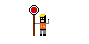

Under Construction
Early Life
Jason Tood was an orphaned teenager living alone in Gotham city, who had to resorted to crime. He was caught by Batman when trying to steal the wheels off the batmobile. Instead of sending him to the authorities, Batman decided to train Jason as a new Robin, after the original left to become Nightwing
Life as Robin
For a while, Jason loyally fought alongside Batman, and was noticably more violent thatn his predecessor. Jason started to disagree with Batman's no killing rule. Eventually, he left on his own to fight the Joker. The Joker ended up torturing and killing Jason. Batman arrives to discover Jasn's body, but does not kill the Joker.
The Red Hood
Unbeknownst to Batman, Jason was eventually revived in the lazarus pit. A magical pit that can extend life, or int this case bring someone back from the dead.
Jason took up the title of Red Hood, a name that the Joker had once used. As Red Hood Jason continued to fight crime, though he had no issue killing when he belived it to be necessary.
Eventually Red Hood would go back to working with Batman's other sidekicks, though he still had a fairly low opinion of Batman himself.